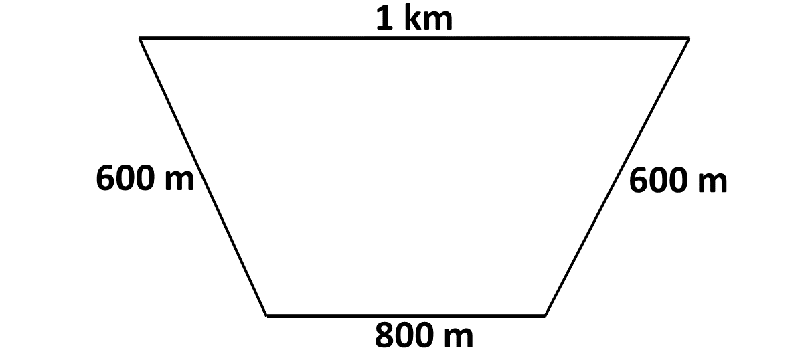
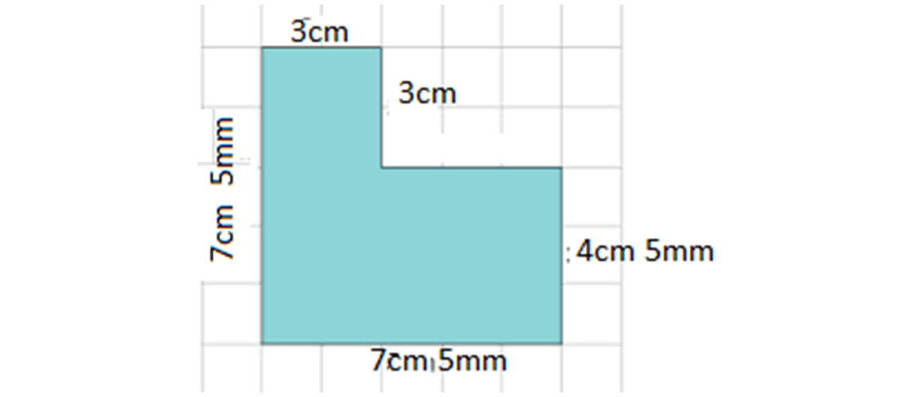
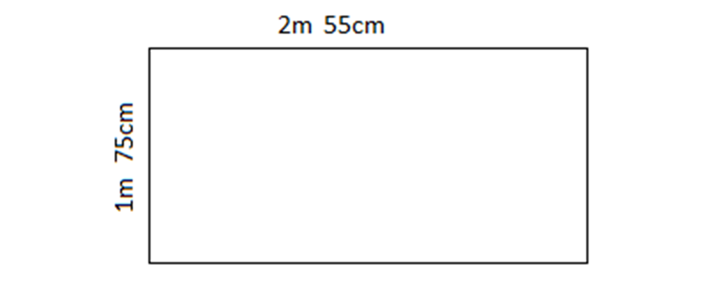

In this lesson, we will learn how to calculate the perimeter of shapes when the dimensions are given in two different units.
Perimeter is the distance (or length) around an object or shape. It can also be described as the total length of a plane shape's boundary lines. It is therefore measured in units such as metres, kilometres, centimetres etc.
To find the perimeter of any shape, you need to add up the lengths of all the sides.
When dimensions are given in two different units, such as centimeters (cm) and millimeters (mm), or meters (m) and centimeters (cm), we must first convert all dimensions to the same unit before performing any calculations.
Below are common conversions used when calculating the perimeter of shapes.
\(*\) 1 meter (m) = 100 centimeters (cm)
\(*\) 1 centimeter (cm) = 10 millimeters (mm)
\(*\) 1 kilometer (km) = 1,000 meters (m)
Remember to convert all dimensions to the same unit before adding everything together to find the perimeter.
Example 1
A rectangle has a length of 2 m and a width of 50 cm. Find the perimeter.
Solution
Example 2
A triangle has sides measuring 1 km, 400 m, and 600 m. Find the perimeter.
Solution
Example 3
A square has each side measuring 75 cm. A path around the square is 4 mm wide. Find the perimeter of the square including the path.
Solution
Example 4
Calculate the perimeter of the shape below.

Solution
Example 5
Calculate the perimeter of the shape below.

Solution
Solve the following.
-
A rectangle has a length of 1.5 m and a width of 80 cm. Find its perimeter.
-
A triangle has sides measuring 3 m, 250 cm, and 1.2 m. Find its perimeter in centimeters.
-
A rectangular park has a length of 2 km and a width of 500 m. Find its perimeter in meters.
-
A square has sides measuring 1.2 m. A decorative border 3 cm wide is added around the square. Find the perimeter of the square including the border in centimeters.
-
Calculate the perimeter of the shape below.

Test yourself on what you have learnt so far. Click on the link below when you are ready.
Kindly contact the administrator on 0208711375 for the link to the test.
To advertise on our website kindly call on 0208711375 or 0249969740.